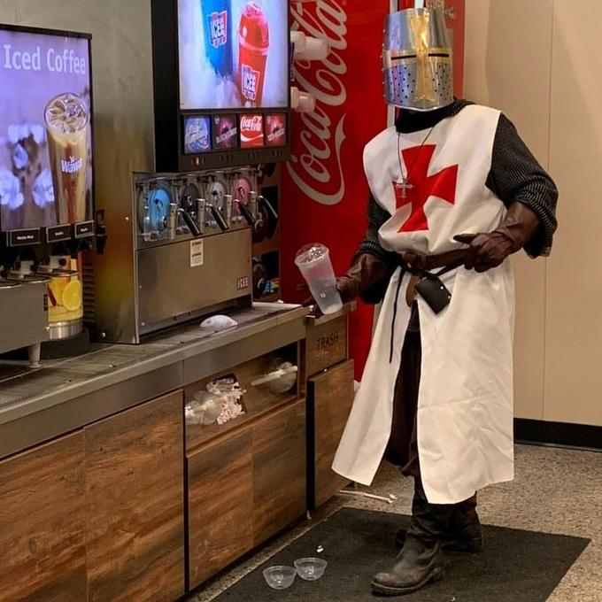

Hello There! I did this page in order to be a place for people to create summaries and help each other in these hard times where we must do what we have always done. Live. Some things are still to be implemented but I will get to them when I have time.
With nothing else to say here is my contact:
Email :this.is.my.email@doesnotexist.com
Tel: 1-800-555-2368